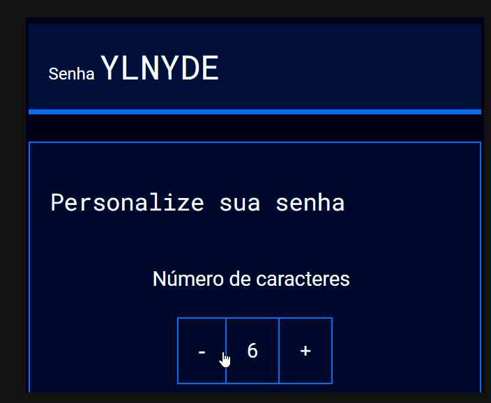

Entendendo a IA
Aprender a criar algoritmos de aleatoriedade em JavaScript é essencial para gerar resultados imprevisíveis, como em jogos ou sorteios. Além disso, dividir o código em módulos com export e import torna o projeto mais organizado e fácil de manter. As condicionais permitem que o programa tome decisões com base em diferentes situações. O uso de fluxogramas ajuda a visualizar o funcionamento lógico do código antes da implementação. O loop "for of" pode ser usado com condições de parada, controlando quando o laço deve encerrar. Já o método replace() é útil para substituir partes de uma string de forma prática. Com esses recursos, é possível escrever códigos mais eficientes, lógicos e bem estruturados.
Saiba Mais

Mamíferos Marinhos
PAprender a manusear HTML, CSS e JavaScript é fundamental para desenvolver páginas web completas e interativas. Com esses conhecimentos, é possível criar websites responsivos, que se adaptam a diferentes tamanhos de tela e dispositivos. Além disso, aplicar princípios matemáticos na segurança de senhas ajuda a avaliar sua força e resistência contra ataques. A análise e comparação crítica de sites permite identificar boas práticas de design e segurança. Implementar funções de segurança de senhas é essencial para proteger os dados dos usuários. Essas habilidades combinadas formam a base para criar aplicações seguras, funcionais e modernas.
Saiba Mais

Como fazer uma senha forte
Projetos de preservação de espécies ameaçadas, como tartarugas marinhas e tubarões.
Saiba Mais